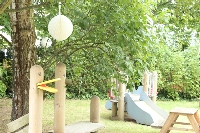
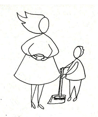
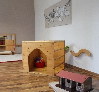

Pédagogie
Maria Montessori (1870-1897), a développé
les principes suivants :
- La liberté de mouvements, de communiquer, de choisir son activité
Les enfants bénéficient d’une grande liberté, mais dans un cadre défini, structuré et sécurisé. - L’activité structurée autonome
La réalisation autonome d’une activité préalablement présentée. - Agir de façon indirecte
Agir sur tout ce qui entoure l’enfant. - Respecter le rythme de chacun
Respecter le rythme et l’évolution de chaque enfant. - Apprendre par l’expérience
L’appropriation d’un concept par l’expérience. - L’activité individuelle
C’est le meilleur moyen d’apprendre à son rythme. - L’éducation (une aide au développement)
L’éducation doit être pensée comme une aide au développement, satisfaire et accompagner les besoins inhérents à chaque tranche d’âge.
Le rôle de l'éducateur
Il a 3 missions essentielles :
- Observer les enfants, pour offrir une réponse pédagogique pertinente et adaptée, au regard des rythmes, intérêts et spécificités de chacun d’eux.
- Etre le garant de l’ambiance : celle-ci doit toujours être ordonnée et calme pour protéger l’activité autonome et la concentration de l’enfant. Pour cela, l’éducateur doit avoir développé un certain « savoir être » : la patience, la confiance et l’humilité. Il doit accepter d’être guidé par l’enfant pour l’accompagner au mieux dans sa grande conquête de l’indépendance.
- Connaître les particularités des stades de développement (les périodes sensibles), des cycles de concentration de l’enfant afin que toute intervention de sa part soit pertinente et utile à l’enfant.


